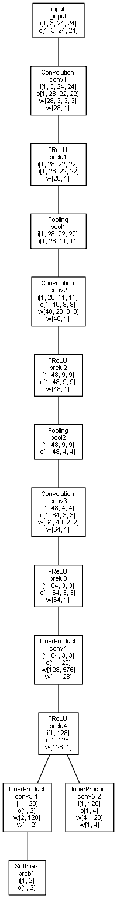

dnn facedetection
1. SSD
opencv's uint8 model is only 2.6 mb !
and it is as straightforward as it looks:
dnn::Net net = dnn::readNetFromTensorflow("opencv_face_detector_uint8.pb","opencv_face_detector.pbtxt");
Mat res = net.forward("detection_out");
Mat faces(res.size[2],res.size[3], CV_32F, res.ptr());
for (int i=0; i(i);
float batch = data[0];
float confidence = data[2];
if (confidence > confThreshold)
{
int left = (int)(data[3] * f.cols);
int top = (int)(data[4] * f.rows);
int right = (int)(data[5] * f.cols);
int bottom = (int)(data[6] * f.rows);
int classId = (int)(data[1]) - 1; // Skip 0th background class id.
...
2. MTCNN (using opencv's dnn module)
a 3 step process, using 3 seperate (caffe) networks:

- 1. grab detection candidates from an image (scale) pyramid
- 2. refine boxes regression
- 3. derive 5 principal face landmarks (eyes, nose, mouth corners)

3. PCN
original caffe code and model from here